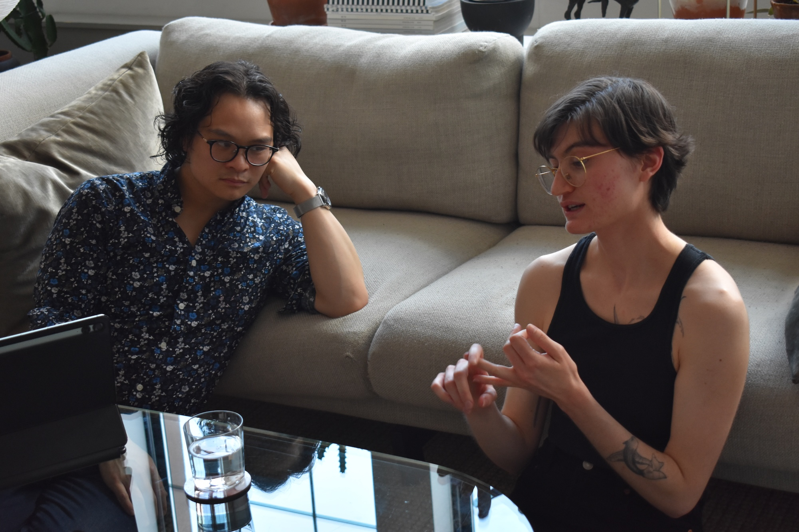
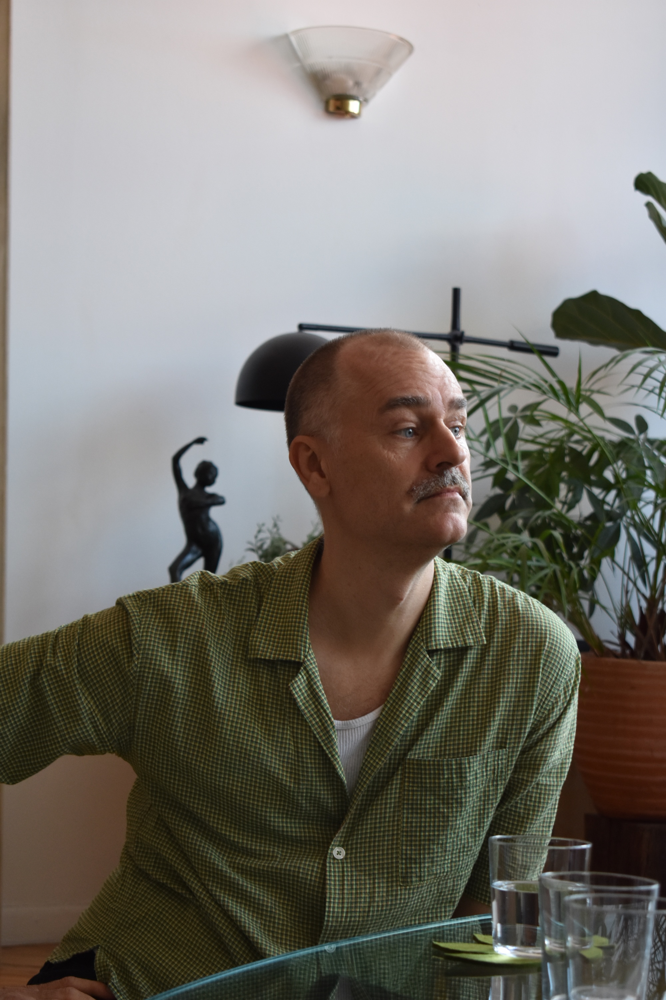
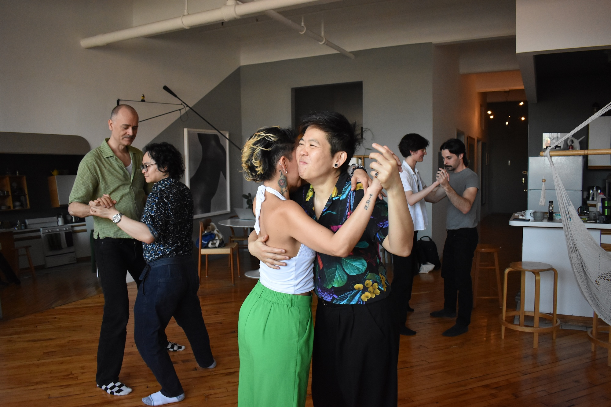
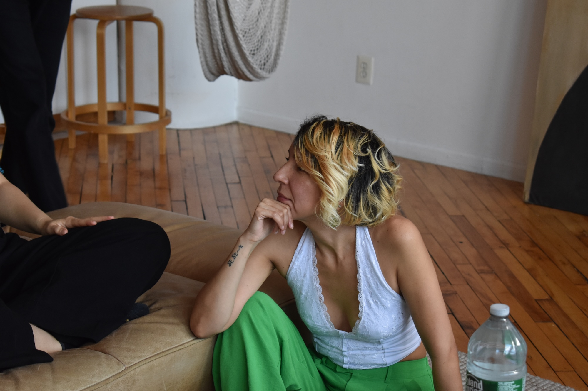
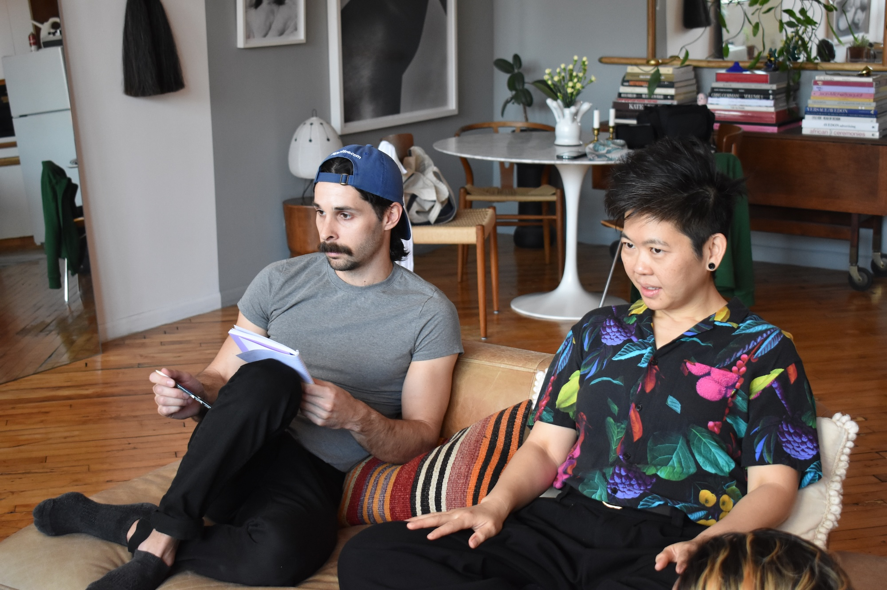
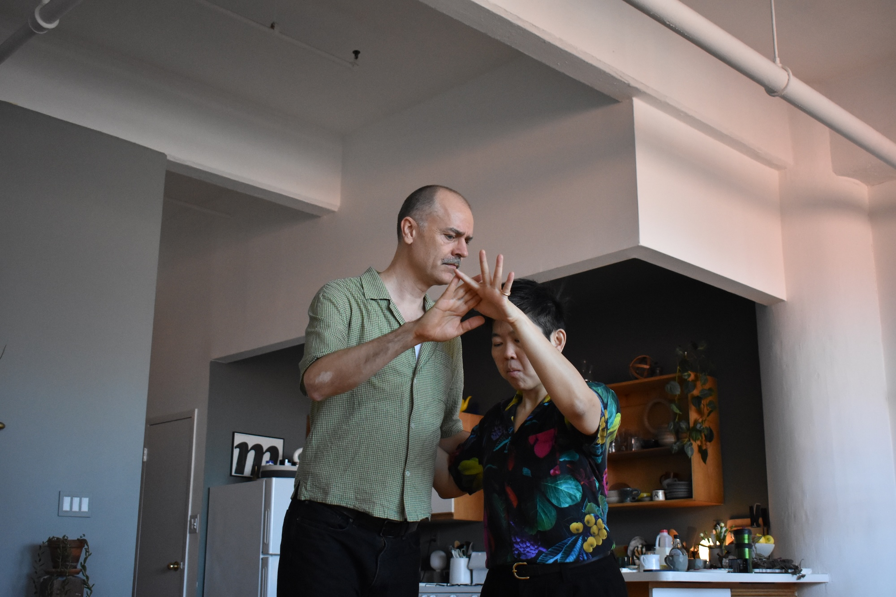

Organizando
¿Por qué organizas eventos de tango queer?

Phi Lee
Pasé por dos etapas organizando tango queer. La primera fue con Tim. En ese momento lo hacíamos porque me di cuenta de que había muchos hombres gays que simplemente no se sentían cómodos bailando en las milongas tradicionales. Eso fue hace diez años, pero lo que me hizo volver a organizar tango queer fue viajar a Europa, probablemente al Festival de Tango Queer de París o al de Valencia. Fui a varios festivales de tango queer en Europa, uno tras otro, y es difícil señalar una sola experiencia. Fue un período de muchas experiencias, porque pude comparar los distintos eventos de tango queer a los que fui y ver que había ciertas similitudes y también diferencias. Eso me ayudó a definir qué tipo de evento de tango queer quería crear.
NW: ¿Cómo describirías el tipo de evento de tango queer que quieres crear?
Diría que la gran idea es que pueda ser una experiencia transformadora… Esperanza!
NW: Esperanza--¿Eso es lo que querés para tus eventos?
Sí. Que la gente se vaya sintiéndose llena de esperanza.

Mati
Principalmente porque son los espacios de los que yo me siento más cómodo. O sea, hay muchos otros motivos, pero en realidad es un espacio en el que yo quiero estar. Así que es un poco egoísta pero a la vez estoy orgulloso.
NW: y, ¿Puedes describir uno o dos momentos que condensan para ti por qué organizas el tango queer?
Sí. Hay dos cosas que puedo nombrar. Son las que me dieron la cabeza, no sé si representan la pregunta, pero una es en parte darme cuenta que los espacios queer son los espacios en los que como organizador se me invita a participar. Como la primera oportunidad para pasar música acá en Nueva York la tuve por un espacio queer. La primera oportunidad que di una clase acá en Nueva York la di en un espacio queer. Entonces siento que la comunidad queer es a la que pertenezco, así que es la comunidad a la que tengo que--a la que tengo y a la que quiero construir y colaborar. Además que es la que yo me siento más cómodo.
Y después creo que hubo un momento súper importante para mí, que fue en Miranda el día que Trump ganó las elecciones, porque justo hubo Miranda el día después. Y si bien yo siempre había pensado en la práctica como algo no tradicional en el que puedan pasar cosas alternativas, en ese momento surgió la necesidad de que--las personas que asistieron tenían ganas de conversar cómo se sintieron y cómo habían pasado. Y el hecho de que podamos decidir “OK, vamos a parar la música, vamos a dejar de bailar y vamos a hablar de lo que estamos sintiendo” me pareció único. Me parece que es algo que solamente puede pasar en un espacio queer.

Norma
Me parece y creo que siempre trato de enfatizarlo, que a veces nos sentimos bien y nos sentimos en más comodidad cuando estamos aprendiendo, cuando estamos compartiendo con personas que comprenden nuestra experiencia. De alguna u otra manera nos conecta alguna experiencia a pesar de que de repente no sé si tu experiencia es non-binary, female, cisgénero, pero en algún momento hemos compartido esa experiencia y a veces sentimos cosas similares. Creo que eso: estar con personas que entienden tu experiencia y saber que hay unas personas que tienen más experiencia en el tango, pero que esa persona entiende tu experiencia y te quiere compartir: “Ven, ven, te ayudo. Mira que yo ya viví eso. Ven, te digo cómo me fue a mí y qué puede funcionar para ti. O al menos te lo comparto.” Creo que eso es muy bonito. O sea, que yo lo he recibido. He recibido de personas females, líderes que me están enseñando en este momento y recibo esa información completamente diferente a como la recibo de un excelente profesor varón o una mujer heterosexual incluso. Creo que es muy diferente. Por eso creo que es importante añadirlo y enfatizarlo siempre.
NW: ¿Puedes describir uno o dos momentos que condensan para ti por qué organizas tango queer?
En la última práctica que tuvimos de Tiny Práctica hubo un momento que mientras la profesora estaba revisando música o un video, no recuerdo, me quedé mirando [ríe] cómo estaban bailando el resto y cómo se compartían y cómo practicaban. Eso no sé, me pareció tan romántico y tan dulce y tan bello–como que me sentí tan feliz de verlo y se me olvidó que estaba en una clase, me quedé como una pendeja mirándolo. Creo que dije “esto vale la pena.” Y hay otra cosa hermosa: a veces no estamos bailando ni siquiera. A veces simplemente hablando y compartiendo, alguien quiere decir algo o alguien comparte algo y se genera una conversación bellísima. Eso es todo para mí–o sea, ni siquiera el baile sino eso: estar ahí, hablar y ser y poder ser y compartir. Eso es bellísimo.

Leo
Por crear ese espacio que yo necesitaba y que realmente si yo no lo hubiese tenido, no sé qué hubiese pasado. Porque ese sentido de pertenencia me lo dio el tango queer. No solamente el tango, pues específicamente el tango queer, porque en el tango también yo tenía que crear un personaje para poder ir al tango. Entonces esa vez uno se ponía la corbata, el saco, e iba al tango tradicional y en el tango queer yo podía ir como quería. Puedo llevar lo que quiero, puedo moverme como quiero, es esta libertad. Entrar a casa. Poof. Es como entrar en la casa. Entrar en la milonga, entrar en casa es la misma sensación de paz, de no tener que actuar, no tener que ser lo que el otro espera que seas. Entonces nada, sabíamos de esa necesidad. Sabíamos de que había--seguramente habría gente que necesitaba tener ese espacio y por eso decidimos empezar el festival.
NW: ¿Puedes describir uno o dos momentos que condensan para ti, por qué organizas tango queer? ¿Hay un momento o recuerdo que destaque para ti?
Una vez estábamos hablando también con varios organizadores del tango y nos hicimos esta pregunta: ¿Por qué estamos organizando? Porque llegado cierto momento, bueno, ya podías bailar como tango queer en milongas regulares. Entonces, muchos organizadores, otros organizadores tradicionales nos dicen: “Pero ¿por qué organizan tango queer? Si acá en mi milonga todo el mundo puede bailar como quiera.” Porque--y yo les digo--no es lo mismo, no es lo mismo. Es como te digo, esa sensación de entrar a casa y sentirte en casa pasa solamente en los espacios queer. Uno siempre siente como la mirada detrás de la nuca cuando va a la milonga tradicional y sale a bailar tango queer. Por más que sabe que está todo bien, *nunca* está todo bien. [Noah ríe] Siempre hay alguien, algún comentario, alguna mirada, alguna cosa que a uno le hace esa cosita acá en la panza, que 'unh!'.
También me ha pasado en milongas tradicionales en Argentina, donde he salido a bailar con algún amigo con quien en ese momento estábamos bailando juntos y el organizador se ha acercado a pedirme que me retire de la milonga y cuando pregunto el por qué me dice: “no, es que acá bailamos tradicional.” Entonces yo me acuerdo que le respondo, “Pero yo estoy bailando tradicional, estoy bailando en sentido de la ronda, en abrazo cerrado, no estoy levantando mis piernas, no hago voleos, mi tango es tradicional, qué parte de mi tango no es tradicional?” Entonces me dicen: “No, muchachos, ustedes entienden, les devuelvo dinero.” Yo no quiero el dinero. Yo pagué por la entrada, estoy bailando tradicional, me voy a quedar en la milonga bailando. Y así, aunque me sentí incomodísimo, me quedé hasta que cerró.
Entonces, si bien también me quedé simplemente para decir “acá estamos, estos somos, podemos convivir en la milonga con todo el mundo sin causar ningún tipo de de daño,” (más que el daño que tiene la persona en su mente, contra eso ya no podemos hacer nada, pero bueno). Ese tipo de cosas hacen que yo sí quiera organizar espacios donde eso no pase. Porque también él como organizador tal vez tenga su derecho de decir quién puede estar o no, pero bueno, eso era lo que mayormente me impulsa a seguir creando espacios.

Mikael
Para que haya más eventos de tango queer. Porque son los únicos a los que me gusta ir y no hay tantos. Por eso organizo.

Arty
Me había desilusionado del swing porque sentía que nadie estaba intentando construir comunidad. Nadie estaba creando un espacio donde pudiéramos conectar, hacernos amigos, mejorar, crecer y aprender juntos. Sentía que hacía falta algo así. Y tengo muchísimo que agradecerle a Phi Lee, porque realmente fue el Simposio de Tango Queer que ella organizó lo que lo hizo posible. Espero que valore que, para mí, lo que ella hizo fue la base y el fundamento sobre el que nosotros construimos.
Para dar un poco de contexto: en 2022 Phi Lee organizó un simposio de tango queer. Invitó a personas de todo el mundo a reunirse en Gemini and Scorpio Lofts, en Brooklyn, para conversar sobre qué es el tango, qué significa organizar tango, qué significa el tango para nosotros, qué queremos ver en el tango y qué sentimos que todavía falta. También habló de que quería que más personas se animaran a organizar, que más gente diera un paso al frente. Contó lo agotada que estaba después de organizar tantas clases y eventos de tango queer. Decía que la gente siempre le preguntaba cómo podía ayudarla, pero que responder a esa pregunta implicaba más trabajo para ella, porque tenía que pensar tareas, repartirlas y coordinar todo. Lo que realmente quería era que la gente tomara la iniciativa y ofreciera aquello que sabía que podía hacer. Así se alivia la carga, así se reduce el estrés y así se contribuye a la comunidad: no preguntando qué podés hacer, sino ofreciendo lo que podés aportar.
NW: ¿O sea, tomando la iniciativa?
Exactamente. Ella decía: «No pueden esperar que yo les diga qué hacer. Somos una comunidad y tenemos que trabajar entre todes». Eso realmente me inspiró y, poco tiempo después, me comuniqué con vos y con Phi Lee para decir: «Bueno, pongamos la teoría en práctica. Organicemos clases de tango queer». Ahí fue realmente donde empezamos: creando clases regulares, con un espacio estable, accesible, de baja presión e inclusivo, centrado en la comunidad queer.
NW: ¿Podrías describir uno o dos momentos que, para vos, resumen por qué organizás tango queer?
Los momentos que ya mencioné, pero también las muchas veces en que nos hemos sentido realmente queridos por la comunidad de tango queer. En la última milonga aniversario les entregaron unas placas. Yo no estaba, pero nos regalaron una a cada une y eso me conmovió muchísimo. Creo que la mía todavía está en un estante de mi cuarto de costura. Todos los meses sostenemos este espacio y, muchas veces, la gente dice: «Un aplauso para Noah y Arty. Démosles el reconocimiento que merecen por crear este espacio, organizar estas clases y estar acá todas las semanas». Porque, a veces, este trabajo puede sentirse bastante invisible. No es fácil, es estresante y renunciás a muchas cosas cuando decidís que todos los sábados de tarde vas a estar ahí. Por eso, el reconocimiento que nos ha mostrado nuestra comunidad y lo mucho que nos dicen que valoran lo que hacemos… eso es algo que amo.